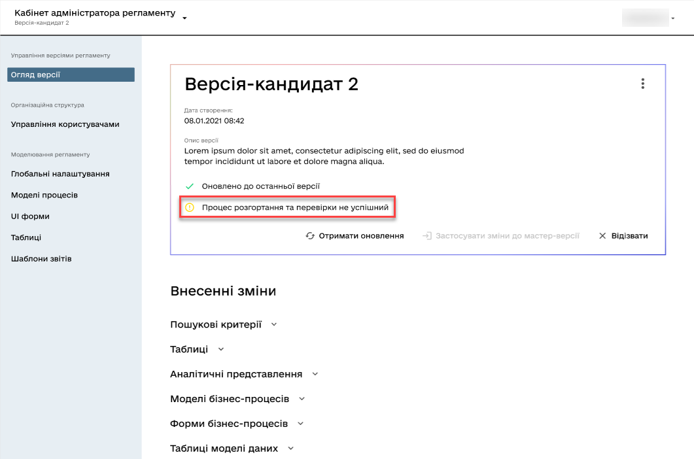

Registry data model tables and their structures
The development of regulations involves the creation of a registry data model. The Regulations administrator portal allows working with registry database tables in a read-only mode.
|
The list of tables and their structures is available for both the master and candidate versions of the regulations. For more information about the versioning of regulations, see Managing regulations versions |
1. General overview
The administrator can search for a table by its name (in Latin characters), sort tables by name, historicity, subjectivity, and description, as well as explore their structure according to the data model.
You can view the complete list of tables as follows:
-
Sign in to the Regulations administrator portal.
-
Select either the master version of changes, or the candidate version.
Майстер-версія — це гілка регламенту за замовчуванням. При вході до Кабінету, адміністратор завжди потрапляє на ⌂ Домашню сторінку із майстер-версією змін. TIP: Master version is the default branch of the regulations. Upon entering the portal, the administrator always lands on the ⌂ Home page with the master version of changes. -
Navigate to the Tables section.
2. Searching tables by name
Registry regulations administrator can quickly and conveniently find the required table using the Search by name field. Simply enter the initial letters.
3. Sorting tables
Registry regulations administrator can sort tables by name, historical relevance, subjectivity, and description, quickly finding the necessary values.
- There are 2 types of sorting supported:
-
-
↓— Descending sorting. -
↑— Ascending sorting.
-
- Fields to which sorting is applied:
-
-
Table name; -
Historical; -
Subject; -
Description.
-
4. Viewing table structures
Registry regulations administrator can view the structure of the database registry tables according to the provided model.
To view the table structures, open any table in the Tables section.
4.1. "General" tab
The General tab provides basic information about the table, allowing a superficial understanding of the purpose of the table, as well as some of its attributes, namely:
-
Namefield — contains the name of the table from the database registry. For example,diplomas. -
Descriptionfield — contains the description, i.e., the purpose of the table in the database registry. For example,Received diplomas.
-
Subjectcheckbox — allows determining the subjectivity of the table.The checkbox indicates the presence of a connection with the subject. At the object level, it is possible to set the attribute isObject=“true`," which adds a column with a reference to the subject table (`tableName=”`subject`"), i.e., to a specific data owner.
4.2. "Indexes" tab
The Indexes tab allows viewing the list of indexes for a specific table in the database, as well as the rules by which they operate.
|
An index is a database object created to improve query execution efficiency. Database tables can contain a large number of rows stored in arbitrary order, and searching for them based on a given value by sequentially scanning the table row by row can be time-consuming. The index is formed from the values of one or more columns of the table and pointers to the corresponding rows of the table, thus enabling the retrieval of the required row based on the given value. |
- The tab contains 2 columns:
-
-
Name— the name of the index (of an object). -
Rule— the rule applied to the corresponding index when selecting data. For example, how to represent the data in response to a query - in ascending order (ASC), or descending (DESC), and so on.
-
The modeler can also sort the indexes by name and the rule applied to the index when searching for data.
Pagination option (paging) is also available if the number of records with indexes exceeds 10 per page.
4.3. "Columns" tab
The Columns tab allows you to view the structure of columns in a specific table of the registry database.
- Currently, you can view the following parameters:
-
-
Column— the name of the column in the registry database. -
Type— the data type stored in the field. -
Default value— the default value of the field if another value is not explicitly specified.
-
- Two types of sorting by all columns are supported:
-
-
↓— Descending sorting. -
↑— Ascending sorting.
-
5. Working with tables within candidate versions
The development of regulations involves designing a data model for the registry. Viewing the list of tables and their structure is available in read-only mode for candidate versions (for more information, see Managing regulations versions).
- Functional scenarios:
-
-
Viewing the current state of the data model for the registry regulations (list of tables) being developed (within a candidate version).
-
Obtaining the result of checking the feasibility of successful deployment of the data model.
-
Viewing the "subjectivity" attribute value in the list of tables.
-
Deleting temporary databases for candidate versions.
-
5.1. Deploying temporary replicas
When working with registry data, a temporary replica is created and deployed for each candidate version from the reference database (PostgreSQL). The reference database contains only the structure without any registry data.
The regulations deployment subsystem (regulatory Jenkins) creates the database structure by deploying the liquibase configurations of the registry regulations. For more details, see Creating a physical data model).
CREATE DATABASE [registry-dev-<vcid>] WITH TEMPLATE registry-template OWNER [our owner user];This script creates a new temporary database with the name registry-dev-<vcid>, which is copied from the reference database registry-template. <vcid> is a unique identifier of the candidate version.
-
registry-template— the name of the reference database obtained after running the OKD run-db-script-job. -
registry-dev-<vcid>— the template name for the temporary database for the candidate version.
The regulations management subsystem (registry-regulations-management) reads the data model structure of the temporary database and saves it as a snapshot of the current state of the data model to the DataModelSnapshot file in JSON format. Later, this data is passed to the Regulations administrator portal, where the current state of the database tables is displayed for each individual candidate version.
After successfully generating the temporary database for a specific candidate version, the administrator can work with the created replica and view all the tables and their structure in the Tables section of the Regulations administrator portal.
The general interface of the Regulations administrator portal for master and candidate versions when working with tables is the same (see General overview_).
5.2. Verifying the operability of the temporary database deployment configuration
During the deployment of temporary databases, the operability of the existing liquibase changelog configuration of the registry regulations is also checked. During this process, information about the execution status of the corresponding Jenkins pipeline is passed to the Regulations administrator portal.
The deployment status of the temporary database is published to the corresponding merge request (MR or change request to merge the changes into the master branch) in Gerrit.
The regulations management subsystem reads the deployment status of the registry regulations (liquibase deployment) from the corresponding merge request in Gerrit. The execution status of the corresponding pipeline is displayed in the Gerrit merge request for the candidate version using specific labels:
-
SUCCESS: the deployment and verification process is successful (Verified +1)
-
FAILED: the deployment and verification process is unsuccessful (Verified -1)
-
UNKNOWN: the deployment and verification process is ongoing/not performed (Verifiedlabel is absent)
5.3. Reconciling outdated schemas of temporary databases
When working with registry data, a temporary replica is created and deployed from the reference database (PostgreSQL) for each candidate version. Often, this leads to a situation where the candidate branch may have been deleted, but the temporary database continues to exist and utilize registry resources.
To address this issue, a special reconciliation process has been implemented to periodically remove outdated database schemas based on candidate versions (candidate versions that have been integrated/merged into the master version or those that have been deleted without integration).
Reconciliation process (cleanup-of-version-candidate-db pipeline) is a Jenkins process scheduled to run at a specific time. The frequency parameter for triggering the process is configured at the helm configuration file level of the registry and passed to the Jenkins pipeline trigger level. The default value is once a day at 17:00 GMT+2 (Kyiv time).
- You can configure the process in your registry’s Jenkins service by following these steps:
-
-
Open the Jenkins console in your registry project.
-
Find the
cleanup-of-version-candidate-dbpipeline. -
Open the settings (⚙ Configure).
-
Go to the
Build Triggerssection and set the desired frequency for running the process. The frequency is configured in the unix-cron format.
-
- When the reconciliation process is triggered, the following actions are performed:
-
-
Retrieval of the list of candidate versions from the Gerrit repository.
-
Retrieval of the list of temporary databases for candidate versions in the database.
-
Deletion of temporary database schemas for candidate versions for which there are no open merge requests (MR) in Gerrit.
-
After running the cleanup-of-version-candidate-db process, the system deletes all temporary databases that are not in an "Open" status in Gerrit.